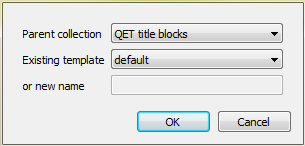

Save title block¶
The current title block can be saved from the Menu bar, toolbar and using the corresponding keyboard shortcut.
One title block is conformed by only one file with the format .titleblock. The .titleblock
extension is the native extension from QElectroTech title blocks.
Save title block from Menu bar¶
Select File > Save menu item to save the title block changes.

Figure: QElectroTech title block editor File menu
At the case that the opened title block has to overwrite an existing title block or it has to be saved as a new title block:
Select File > Save as menu item to display the Save as title block PopUP window.
Figure: QElectroTech Save as title block PopUP window
- Select the title block which should be overwrited or the parent collection and the name for the new title block.
- Press the OK button to save the title block and close the PopUP window.
The title block can also be directly saved as a new file in the Hard Disk directory desired:
- Select File > Save to a file menu item to display the File system PopUp window.
- Select the directory and the name from the title block file.
- Press the OK button to save the title block and close the PopUP window.
Save title block from toolbar¶
- Select the icon
from the toolbar to save the title block changes.
At the case that the opened title block has to overwrite an existing title block or it has to be saved as a new title block:
Select the icon
from the toolbar to display the Save as title block PopUP window.
Figure: QElectroTech Save as title block PopUP window
- Select the title block which should be overwrited or the parent collection and the name for the new title block.
- Press the OK button to save the title block and close the PopUP window.
Note
If the toolbar is not displayed, it can be displaed from Settings > Display > Tools
Save title block using keyboard shortcut¶
QElectroTech allows using keyboard shortcut to increase the working efficiency.
- Press
Ctrl + sto save the title block changes.
The title block can also be directly saved as a new file in the Hard Disk directory desired:
- Press
Ctrl + Shift + sto display the File system PopUp window.- Select the directory and the name from the title block file.
- Press the OK button to save the title block and close the PopUP window.
See also
For more information about QElectroTech keyboard shortcut, please refers to Menu bar section.